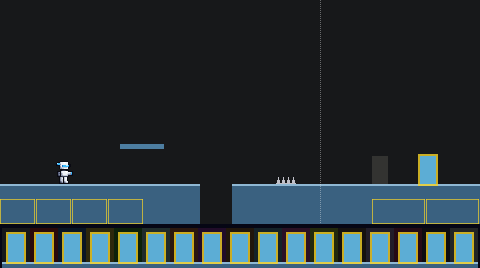
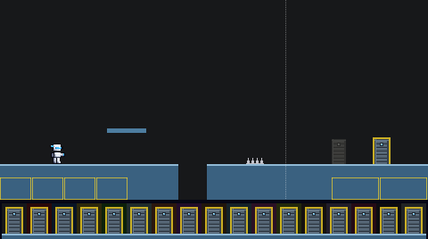
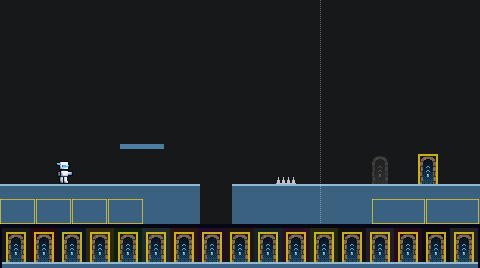
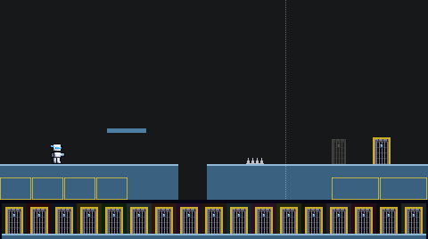

The door into a boss room, 16 by 28, standing on the floor. When it will open it has the game's pulsing gold edge, kept in every variant. When it will not answer yet (it appeared under you, and you have to step off first) it is a grey ghost: the left door in each picture. Shown on the way to the Typeless boss.
A cyan block in a gold edge; a grey block when it will not open yet.

A slatted shutter in a steel frame, with a cyan lamp above it.

A round-topped arch over a dark doorway, with a glowing cyan rune inside.

A stone frame and lintel over an iron portcullis, with a cyan crest above it.

To pick: comment on this board, tag Claude, and give a letter, or say "keep today".